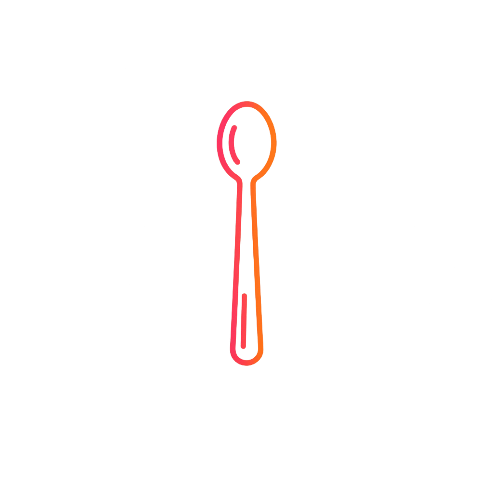

CHEF
ACADEMY
Professional Tools
⚖️
Bilancia Dosatrice
🍳
Crudo vs Cotto
Versione 2.0.4 - Pro Suite
Elimina
Bilancia

x0
0
Cucchiaio
Sposta il righello
0
Kcal
Crudo vs Cotto
Peso Crudo
100
g
Peso Cotto
250
g
"La pasta aumenta di circa 2.5 volte"
🍝 Pasta Secca
🍚 Riso
🥩 Carne Rossa
🫘 Legumi Secchi
🍗 Pollo
🥬 Spinaci
Regola il peso crudo
10g
500g